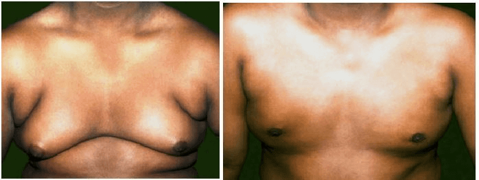

સ્તન

સ્તન ગાંઠની સમસ્યા
ગાયનેકોમસટ્યા
તરુણ, ૧૬ વર્ષના એક છોકરાએ જોયું એકાદ વર્ષથી તેનું ડાબું સ્તન મોટું થતું હતું કોઈ દુખાવો નહોતો, પણ તેનાથી તેને તરવામાં શરમ આવતી હતી. .
ભરત, એક ૭૨ વર્ષના ગૃહસ્થે જોયું તેનું જમણું સ્તન ગઠ્ઠા જેવું થઈ ગયું હતું જેનાથી તેને છ મહિનાથી રહી રહીને અસ્વસ્થતા થતી હતી.
સ્તન
ડિંટડી

ગાયનેકોમસ્ટયા શું છે?
ગાયનેકોમસ્ટયા પુરુષના સ્તનના સ્નાયુઓમાં વૃદ્ધિ થવી તે છે. તે સામાન્ય, ગાંઠની સ્થિતિ, (કેન્સરની નહીં) છે જે ખાસ કરીને તરુણ છોકરાઓ અને ઉંમરલાયક માણસોમાં થાય છે, પરંતુ તે પુરુષને ગમે તે ઉંમરે થઈ શકે છે. ગાયનેકોમસ્ટયા ઘણું સામાન્ય હોવા છતાં, તેના વિષે વધુ વાતો થતી નથી કારણકે અમુક માણસો, ખાસ કરીને તરુણ છોકરાઓ શરમાય છે, ગાયનેકોમસ્ટયા ઘણી વખત તરુણ છોકરાઓને ઘણા અસ્વસ્થ અને ચિંતિત કરી નાખે છે કે તે તેમના માટે છે શું? ત્રણ માથી બે તરુણ છોકરાઓમાં થોડા ઘણા અંશે ગાયનેકોમસ્ટયા ઉત્પન્ન થાય છે, અને ૯૦% કેસો આપમેળેજ મટી જાય છે.
ગાયનેકોમસટ્યાના મુખ્ય કારણોતેમની કિશોરાવસ્થાની ઉંમરે પહોંચે ત્યારે છોકરાઓમાં તરુણાવસ્થા શરૂ થઈ જાય છે.પરંતુ,અમુક છોકરાઓ ફક્ત ૧૦ વર્ષના હોય ત્યારથી જ આવા ફેરફારો શરૂ થઈ જાય છે જ્યારે તરુણાવસ્થા શરૂ થાય ત્યારે ઇસટ્રોજન અને ટેસટેસ્ટેરોન અંત: સ્ત્રાવોંના સ્તરમાં વધારો થાય છે ઇસટ્રોજન સ્તનને વૃદ્ધિ માટે ઉત્તેજિત કરે છે અને ટેસ્ટેટેસ્ટેરોન વૃદ્ધિ અટકાવે છે. .
તરુણાવસ્થા સાથે સંલગ્ન બીજા ફેરફારો સાથે, છોકરાઓને લાગે છે કે તેમના સ્તન કોમળ છે અથવા વૃદ્ધિ પામી રહ્યા છે. તેનું કારણ એ છે કે તરુણાવસ્થાની સ્થિતિમાં વખતે ઘણી વખતે ટેસ્ટેટેસ્ટેરોન કરતાં ઇસટ્રોજનનું સ્તર વધારે હોય છે, જેનાથી સ્તનના સ્નાયુઓમાં ફેરફાર થાય છે. જો સ્ટ્રોજનનું સ્તર સતત ટેસ્ટેટેસ્ટેરોનના સ્તર કરતાં વધારે રહે તો નલિકાઓ અને ગ્રંથિઓની વૃદ્ધિ થશે અને સ્તન મોટા થશે અને વધારે ધ્યાન ખેંચશે. . .
૧૫ વર્ષની ઉમરની આસપાસ, ટેસ્ટેટેસ્ટેરોનનું સ્તર ઇસટ્રોજનના સ્તર કરતાં સતત ઉચ્ચ સ્તરે સેટલ થાય છે. આનાથી સ્તનના સ્નાયુઓ પર ઇસટ્રોજનની અસર સ્થગિત થઈ જાય છે. એક પુરુષ જ્યારે ૧૯ નો થાય , તેનું સ્તન કે સ્તનો સંકોચાવાનું શરૂ થઈ જાય છે અને સપાટ થઈ જાય છે.
વયવૃદ્ધિમાણસની ઉમર જેમ જેમ વધતી જાય છે, તેની શરીરની ચરબીમાં વધારો થાય છે, જે ઇસટ્રોજન પેદા કરે છે. ઉપરાંત, જેમ જેમ માણસની ઉમર વધે છે તે ઓછું ટેસ્ટેટેસ્ટેરોન ઉત્પન્ન કરે છે. ઇસટ્રોજનના સ્તરનો વધારો અને ટેસ્ટેસ્ટેરોનના સ્તરના ઘટાડાની સંયુક્ત અસરથી સ્તન મોટા થઈ જાય છે. પાછલી ઉમરમાં વજન વધારો સ્તનના વિસ્તારમાં ધ્યાને આવે તેવો હોય છે, જે મોટા સ્તનોમાં પરિણામે છે.જેને સ્યૂડો- ગાયનેકોમસ્ટયા કહે છે. ઘણા પુરુષો આ વસ્તુને ઉમર વધવાની પ્રક્રિયાના ભાગ રૂપે કબુલ કરી લે છે.
અન્ય કારણોઅમુક દવાઓ (લખી આપેલી અને ગેરકાયદે) ને કારણે પણ ગાયનેકોમસ્ટયા થઈ શકે છે.તે દવાઓમાં ઇસટ્રોજન હોઇ શકે, જે શરીરમાં અભિસરણ કરતા અંત:સ્ત્રાવનું સ્તર વધારી દે છે , અથવા તેની ઇસટ્રોજન જેવી અસર હોય છે .કેનાબીઝ નામની દવાથી આવું થઈ શકે. અમુક દવાઓ ટેસ્ટેસ્ટેરોનનું ઉત્પાદન સંપૂર્ણપણે અટકાવે છે, જેનાથી અભિસરણ કરતા ટેસ્ટેસ્ટેરોનનું સ્તર ઘટી જાય છે.
ઘણી લખવામાં આવતી દવાઓ શરીરમાં અંત: સ્ત્રાવોંના સંતુલનમા ફેરફાર લાવી દે છે. હાઇ બ્લડ પ્રેશર અથવા હાર્ટ માટેની, માનસિક સ્થિતિ માટેની, હોજરીના અલ્સર, અમુક કેન્સર થેરાપી અને અમુક એન્ટિબાયોટિક્સ,ઉપરાંત શરીર સ્નાયુબદ્ધ કરવા માટે લેવાતી દવાઓ (એનાબોલિક સ્ટીરો ઇડ), આ બધી દવાઓ ગાયનેકોમસ્ટયાનું કારણ બની શકે છે .
આહાર અને વજનજેમ ચરબીના કોષો શરીરમાં વધારે હોય તેમ તેઓ વધારે ઇસટ્રોજન ઉત્પન્ન કરે છે.તેનાથી પછી સ્તનના સ્નાયુઓ વૃદ્ધિ પામે છે. સારીરીતે સંતુલિત આહાર અને કસરત સ્વસ્થ વજન જાળવવા માટે મહત્વના છે. .
આહાર અને વજનજેમ ચરબીના કોષો શરીરમાં વધારે હોય તેમ તેઓ વધારે ઇસટ્રોજન ઉત્પન્ન કરે છે.તેનાથી પછી સ્તનના સ્નાયુઓ વૃદ્ધિ પામે છે. સારીરીતે સંતુલિત આહાર અને કસરત સ્વસ્થ વજન જાળવવા માટે મહત્વના છે. .
દારૂખુબજ દારૂ પીવાથી યકૃત પર અસર ઘણી રીતે થાય છે અને ઘણી સમસ્યાઓ ઉત્પન કરે છે. ખૂબ પ્રમાણ માં પીવાયેલો દારૂ યકૃતને ઉત્તેજિત કરે છે જેનાથી અંત: સ્ત્રાવો અસંતુલિત થઈ જાય છે. ટેસટેસ્ટરોનનું અભિસરણ ઘટી જાય છે, પરંતુ ઇસટ્રોજનના સ્તર વધી જાય છે (કેમકે યકૃત ઇસટ્રોજનનું વિઘટન બંધ કરી દે છે). તેનો અર્થ એ કે સ્તનના સ્નાયુઓ વૃદ્ધિ પામશે.
ગાયનેકોમસ્ટયા શા માટે થાય છે તે કહેવું ઘણી વખત શક્ય નથી. પરંતુ જ્યારે કારણોની ખબર પડે સારવારના વિકલ્પો એજ રહે છેગાયનેકોમેસ્ટીયાના લક્ષણો કયા છે?
ગાયનેકોમેસ્ટીયાના લક્ષણો નાનાથી, વધુ સ્ત્રી દેખાવના સ્તનની ડીંટડી પાછળની સ્તનની પેશીઓની મજબૂત વૃદ્ધિ ધરાવતા મોટા સુધીના વિવિધ હોઈ શકે છે. ગાયનેકોમેસ્ટીયા એક અથવા બંને સ્તનો પર અસર કરી શકે છે. વિસ્તારને સ્પર્શ કરવો નાજુક અથવા પીડાદાયક હોઈ શકે છે.
ટ્રુ ગાયનેકોમેસ્ટીયા (સ્તન ટિશ્યુની વૃદ્ધિ કારણે થતો) સ્યુડો- ગાયનેકોમેસ્ટીયાથી અલગ છે, કે જે ફેટી પેશીઓમાં વધારો છે. જો કે, ગાયનેકોમેસ્ટીયા બંનેનું એક મિશ્રણ પણ હોઇ શકે છે..
છોકરાઓમાં સ્તન વિકાસસ્તન ટિશ્યુ ગર્ભમાંથી વિકાસ પામે છે. આ સમય દરમિયાન, સ્તનો સ્તનની ડીંટડી પાછળની નાના શાખા ટ્યુબ્સ(નળીનો) રચે છે. છોકરાઓ તેમના કિશોરાવસ્થાના વર્ષો અને તરુણાવસ્થા સુધી પહોંચે ત્યાં સુધી, તેમના સ્તનની પેશીઓ છોકરીઓ જેવી જ હોય છે. જો કે, જ્યારે તેઓ તરુણાવસ્થા સુધી પહોંચે ત્યારે, હોર્મોન સ્તરોમાં વધારો સ્તનની પેશીઓના વધુ વિકાસ પર અસર કરે છે.
છોકરીઓમાં, હોર્મોન એસ્ટ્રોજનની સ્તનોને વધારે છે અને નળીઓના છેડે દૂધ ઉત્પાદન ગ્રંથીઓ (લોબ્યુલ્સ)ની રચના કરે છે, જેથી એક મહિલાના સ્તનો ડીંટડીમાં દૂધનું વહન કરવા માટે સક્ષમ બને છે.
છોકરાઓ પણ તરુણાવસ્થા દરમિયાન એસ્ટ્રોજનના ઊંચા સ્તરો હોય છે, પરંતુ તેમના કિશોરવયના વર્ષ ના અંત સુધીમાં તેઓનો સામાન્ય રીતે હોર્મોન ટેસ્ટોસ્ટેરોન ખૂબ ઊંચા સ્તરે હોય છે. જેનાથી સ્તન પેશીઓ પર એસ્ટ્રોજનની અસર અટકી જાય છે અને સ્તન સામાન્ય રીતે સપાટ બની જાય છે.
ગાયનેકોમેસ્ટીયાની સારવાર કેવી રીતે થાય છે?
બંને સ્તનોની એક નિષ્ણાત અને અલ્ટ્રાસાઉન્ડ સ્કેન દ્વારા ક્લિનિકલ સ્તન તપાસ જરૂરી છે. આ પ્રારંભિક મૂલ્યાંકનના આધારે, ખાસ કરીને જો સજ્જન મોટી ઉંમરના હોય તો, નિષ્ણાત મેમોગ્રામ (સ્તનનો એક્સ રે), અને નીડલ બાયોપ્સી (એફએનએસી/ કોર નીડલ બાયોપ્સી) માટે પૂછી શકે છે
ગાયનેકોમેસ્ટીયા હાઈપરથાઈરોડિસમ (વધુપડતી સક્રીય થાઇરોઇડ ગ્રંથિ), જેવી અન્ય સ્થિતિઓ માટેનું લક્ષણ બની શકે તેમ હોવાથી, નિષ્ણાત ગરદન, પેટ (ઉદર) અને અંડકોષોની તપાસ કરવાનુ જણાવી શકે છે. યકૃતના કાર્ય પરીક્ષણો, આલ્ફા ફેટો પ્રોટીન અને બી એચસીજી જેવા બ્લડ પરીક્ષણો કરવાની જરૂર પડી શકે.
ગાયનેકોમેસ્ટીયાની કઈ સારવાર છે?
મોટા ભાગના કિસ્સાઓમાં, માત્ર આશ્ચાસન જરૂરી હોય છે. કોઈ ચોક્કસ સારવાર સલાહની આપવામાં આવતી નથી. કેટલાક લોકો માટે, ગાયનેકોમેસ્ટીયાનું કારણ (જેમ કે દવા બદલવી, શરીરની વધારાની ચરબી ઘટાડવી અથવા દારૂનું સેવન ઘટાડવું) દૂર કરવું, એ સ્તનના વધારાના તાતણા સંકોચવાની જરૂરિયાત હોય છે. થોડા લોકોને નિષ્ણાત દ્વારા નક્કી કર્યા મુજબ ટૂંકા સમયગાળા માટે તબીબી સારવાર (ડેનેઝોલ/ ટેમોક્ષીફન)ની જરૂર પડી શકે છે.
સામાન્ય રીતે, જો ગાયનેકોમેસ્ટીયાએ જીવનશૈલીમાં ફેરફારો અને /અથવા તબીબી સારવાર સાથે સુધારો ન થાય, અથવા તે લાંબા સમયથી અસ્તિત્વ ધરાવતી હોય અને તે તમારા જીવનની ગુણવત્તા પર અસર કરતી હોય તો જ સર્જરીની ભલામણ કરવામાં આવે છે
એક વિકલ્પ તરીકે સર્જરી હાથ ધરતા પહેલાં નિષ્ણાતે કોઈપણ જોખમોની ચર્ચા કરી લેવી જોઈએ કારણ કે ગાયનેકોમેસ્ટીયાની સર્જરી સરળ હોતી નથી. ઓપરેશનનો પ્રકાર ગાયનેકોમેસ્ટીયાના કદ અને સ્તન વિસ્તારમાં વધારાની ત્વચાની માત્રા પર આધાર રાખે છે. પુરૂષની છાતીના વધુ સામાન્ય કદને પુનઃસ્થાપિત કરવાનો હેતુ છે, અને ક્યારેક તેમાં એક કરતાં વધુ કામગીરીનો સમાવેશ થાય છે.
લીપોસક્શન (એક સર્જિકલ પ્રક્રિયા છે કે જેમાં અસરગ્રસ્ત વિસ્તારમાંથી ચરબી દૂર કરવામાં આવે છે) સૌથી સામાન્ય કાર્યવાહી પૈકીની એક છે. તે પોતે જ અથવા સ્તન ઘટાડવાના ઑપરેશન (રીડક્શન મેમોપ્લાસ્ટી તરીકે ઓળખાતી) સારવાર બની શકે છે. સ્તન ઘટાડો પણ લીપોસક્શન વગર કરી શકાય છે. કારણ કે ઉપરની બધી કાર્યવાહી કેટલાક સ્તન ટિશ્યુને છોડી દે છે, ગાયનેકોમેસ્ટીયા હજુ પણ પરત થઈ શકે છે..

ગાયનેકોમેસ્ટીયા તેના દ્વારા અસર પામેલી કોઈપણ વ્યક્તિ માટે એક દુ: ખદાયી, મૂંઝવતો અને અલગ પ્રકારનો અનુભવ બની શકે છે. તરુણાવસ્થા તરફ જઈ રહેલા અને અન્ય શારીરિક ફેરફારોનો સામનો કરી રહેલા છોકરાઓ ખાસ કરીને કોઈની પણ સાથે તેમના વધતા જતા અથવા દુઃખદાયક સ્તનો અંગે ચર્ચા કરવામાં મૂશ્કેલી અનુભવી શકે છે. પરિણામે, કિશોર છોકરાઓને ઘણી વખત ખ્યાલ નથી હોતો કે સ્થિતિ કેટલી સામાન્ય છે. મોટી ઉંમરના પુરુષોને ચિંતા થઈ શકે છે કે તેમના સ્તનોમાં ફેરફારો કેન્સરની એક નિશાની છે.
ગાયનેકોમેસ્ટીયા હોવાથી સ્તન કેન્સર થવાનું જોખમ વધતું નથી. જો કે, પુરુષો માટે પણ ’સ્તનથી વાકેફ’ બનવું અને સ્તનમાં કોઈપણ નવા ફેરફારો જણાય તો નિષ્ણાતને અહેવાલ આપવો તે હજુ પણ મહત્વનું છે. .
સ્તન જાગૃતિના 4 પોઈંટ કોડ